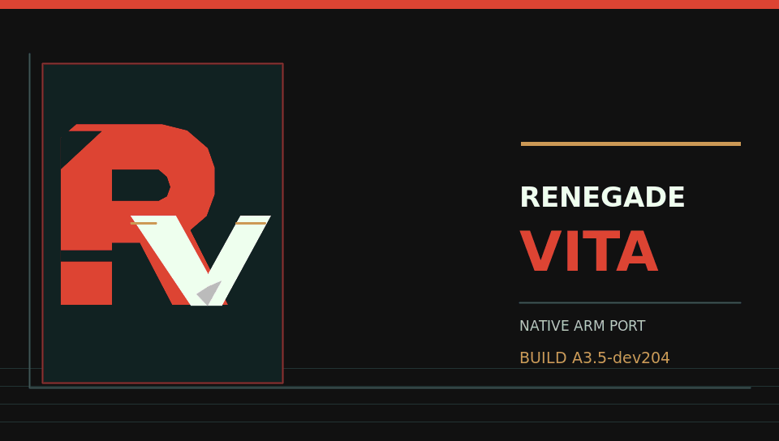
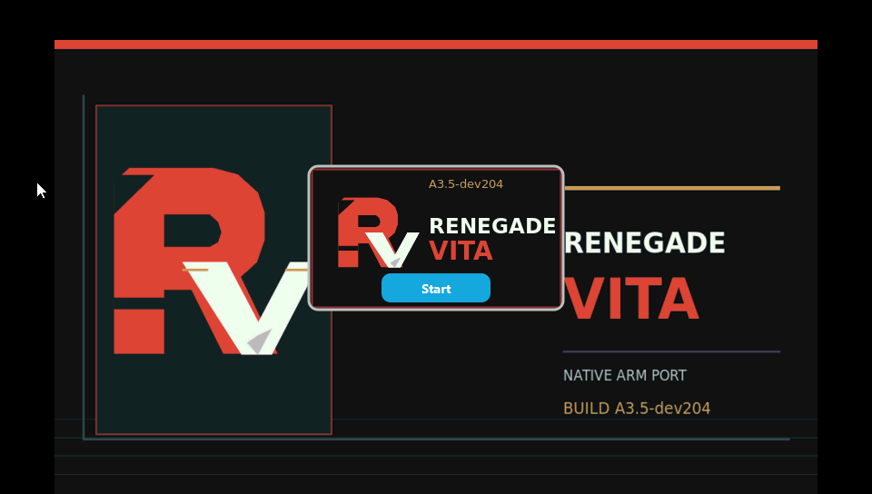
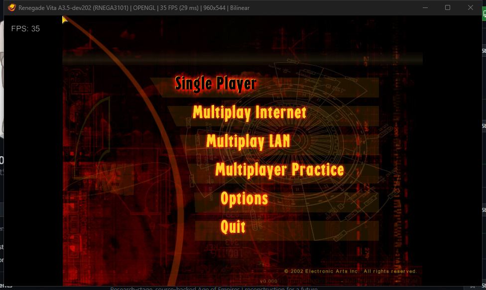
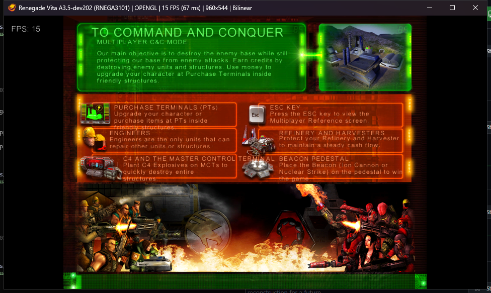
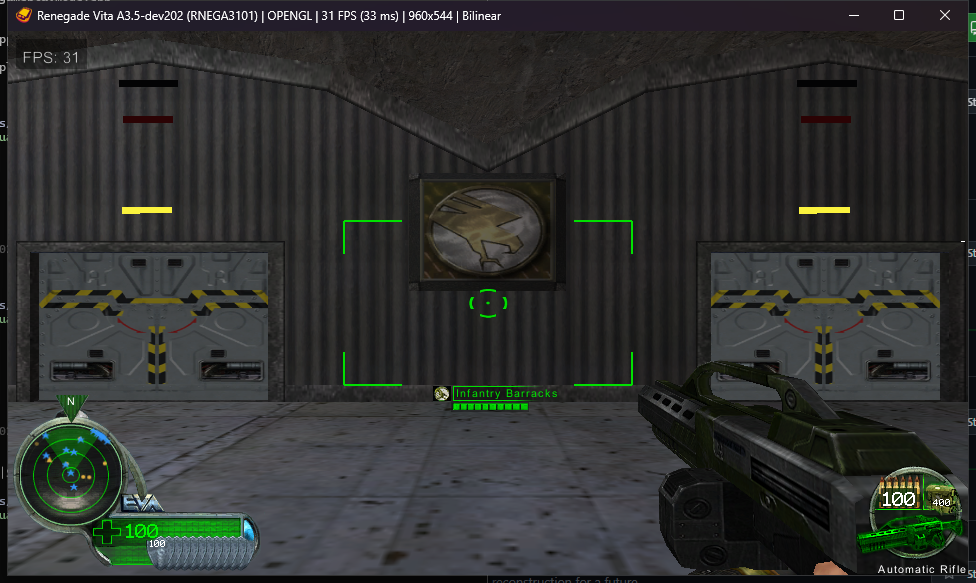

Renegade Vita
Native ARM PlayStation Vita source port of Command & Conquer: Renegade.
Latest development candidate: A3.5-dev204 (September 27, 2026). It packages the original project R/V identity and version-stamped Vita LiveArea. A bounded Vita3K capture confirms the icon, background, gate, and build number display. The executable carries Dev202's Practice and multiplayer loading work, but gameplay was not retested in Dev204.
Experimental build, not a finished game. Earlier Dev202 footage shows Practice loading and brief movement; Dev200 received a live RenCorner purchase response. Full Practice gameplay, campaign, multiplayer, stable frame rate, and physical Vita acceptance remain open. Supply your own legally obtained retail data.
Download Dev204SetupArtwork and provenanceProject status
Dev204 LiveArea in Vita3K
This is a capture of the installed title presentation, not a mockup or a physical Vita screenshot. The R/V art is independently authored for this port; it does not reuse an EA or Westwood logo.

Dev202 Practice in Vita3K
This 35-second window recording has no audio track. It shows a bounded Practice spawn and movement check, not a complete match or physical Vita performance result. The capture run was deliberately stopped afterward.
Download the silent Dev202 MP4 · SHA-256: 4e07cddc0d42911ad2f2cd5a81d05a32057e75c5c0938f5a54eb718286478899






Historical Dev87 physical M00 recording
This is an earlier build, not footage of Dev202. Original recording and artifact identity are preserved.
Physical evidence only. This recording demonstrates a returned Dev87 M00 session; it does not accept the failed menu text, HUD text, dialogue, intro A/V, performance, or lifecycle gates.
- Device source:
ux0:/video/eg/2026-08-31_004224.mp4 - Duration: 200.917333 seconds; H.264/AAC; 640×368
- File size: 44,746,182 bytes
- SHA-256:
e6f10ac1add71090bfa83246f4829b668d2d7629f25e5c0f3dfd1eb09ea44aaf